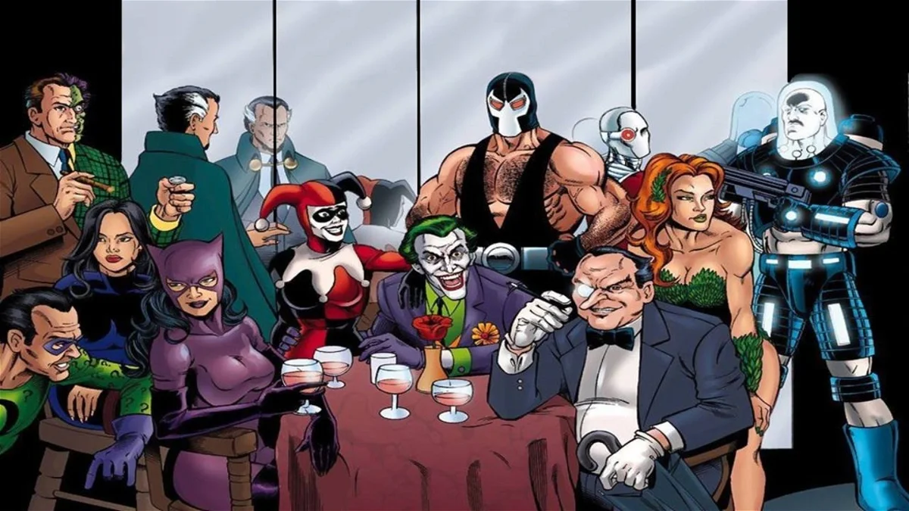

¿Donde aparece Batman?

¿Que enemigos tiene batman?
Batman tiene miles de enemigos pero en resumen para el es un enemigo todo aquel que ejerza el mal.
Entre ellos destacan: El Joker, Harley Quinn,El Pingüino, Ra´s Al Ghul, Dos Caras, El Espantapájaros, Riddle y Bane.